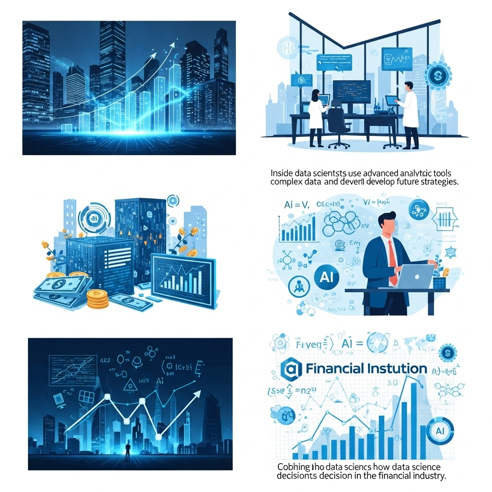
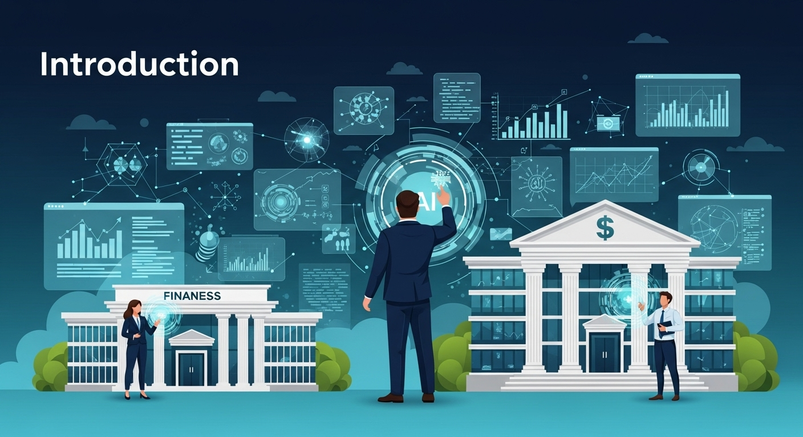
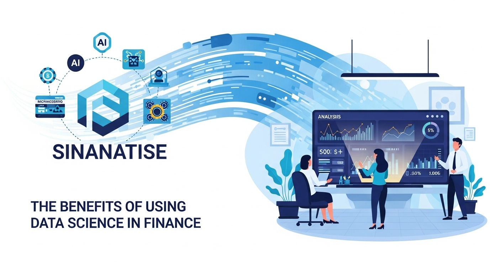
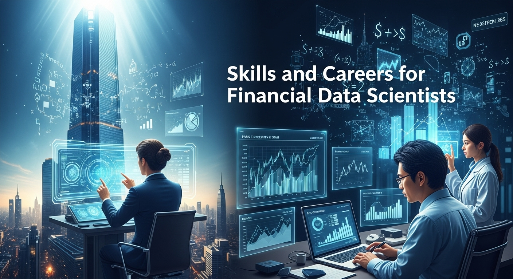
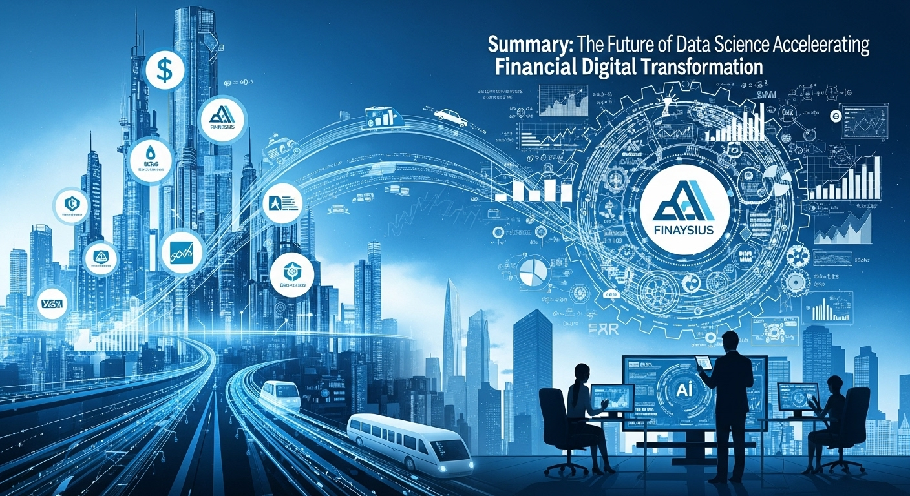

金融業界を革新するデータサイエンスの力！活用事例とキャリアパスを徹底解説

導入

私たちの暮らしに深く関わる「金融」。銀行の預金や住宅ローン、スマートフォンのキャッシュレス決済、将来のための資産運用や保険など、意識するとしないとに関わらず、誰もがそのサービスを利用しています。この巨大で、そして伝統的な金融の世界が今、大きな変革の時代を迎えていることをご存知でしょうか。その変革の中心にあるのが、今回ご紹介する「データサイエンス」です。
「データサイエンス」と聞くと、少し難しく感じられるかもしれません。もしかしたら、専門家だけが使う高度な数学やプログラミングの世界を想像される方もいらっしゃるでしょう。しかし、その本質はとてもシンプルです。データサイエンスとは、私たちの日々の活動から生まれる膨大な「データ」という宝の山から、これまで気づかなかった価値ある「情報」や「知識」を見つけ出し、より良い未来をつくるための羅針盤を手に入れる技術なのです。
金融業界は、古くから「データ」を扱ってきた業界です。誰が、いつ、どこで、いくら使ったのか。市場の価格はどのように変動したのか。そこには、人々の生活や経済活動の記録が、膨大なデータとして蓄積されています。しかし、これまでの金融サービスは、そのデータのごく一部しか活用できていないかったかもしれません。多くは、過去の経験や専門家の「勘」に頼る部分も大きかったのです。
そこにデータサイエンスという新しい光が差し込むことで、金融の世界は劇的に変わり始めています。例えば、一人ひとりのライフスタイルにぴったり合った金融商品を、最適なタイミングでおすすめしてくれる。あるいは、巧妙化する金融犯罪を未然に防ぎ、私たちの資産をより安全に守ってくれる。さらには、経済の未来をより正確に予測し、安定した社会の実現に貢献する。これらはもはやSF映画の話ではなく、データサイエンスによって現実のものとなりつつある未来の姿です。
この記事では、そんな金融業界の未来を切り拓くデータサイエンスの力について、できるだけ優しく、そして詳しく解き明かしていきます。金融業界がどのように変わろうとしているのか（金融DX）、実際にどのような場面でデータサイエンスが活躍しているのか（活用事例）、そして、このエキサイティングな分野で活躍するためのキャリアパスまで、幅広くご紹介します。
金融業界で働いている方はもちろん、データサイエンスに興味がある学生さんやエンジニアの方、あるいは、ご自身の資産運用や将来設計に関心のあるすべての方にとって、新しい発見と学びがあるはずです。少し長い旅になりますが、どうぞリラックスして、データが紡ぎ出す金融の新しい物語を一緒に覗いてみませんか。
金融DXを加速するデータサイエンスの役割
金融業界が今、大きな転換期にあることは、多くの方が肌で感じていることでしょう。そのキーワードが「金融DX（デジタルトランスフォーメーション）」です。この金融DXを力強く推進し、成功へと導くための最も重要なエンジンこそが、データサイエンスに他なりません。ここでは、なぜデータサイエンスが金融DXに不可欠なのか、そして伝統的な金融の世界とどのように融合していくのかを、ゆっくりと紐解いていきましょう。
金融DXにおけるデータサイエンスの重要性
まず、「DX（デジタルトランスフォーメーション）」という言葉を少し整理してみましょう。DXとは、単に業務をデジタル化したり、ITツールを導入したりすることだけを指すのではありません。その本質は、「デジタル技術とデータを活用して、ビジネスモデルや業務プロセス、さらには組織文化そのものを根本から変革し、新しい価値を創造すること」にあります。
では、「金融DX」とは具体的に何を意味するのでしょうか。それは、これまでの金融機関が提供してきたサービスや、その提供方法を、顧客中心の視点からデジタル技術とデータを用いて再構築することです。例えば、店舗に行かなくてもスマートフォン一つで口座開設から融資の申し込みまで完結するサービス、AIが個人の資産状況や目標に合わせて最適な運用プランを提案してくれるロボアドバイザー、これらはすべて金融DXの成果です。
なぜ今、金融DXがこれほどまでに叫ばれているのでしょうか。その背景には、いくつかの大きな環境変化があります。
第一に、顧客のニーズが多様化し、高度化していることです。デジタルネイティブ世代が社会の中心となり、人々はあらゆるサービスにおいて、スマートフォンで完結する利便性や、自分に最適化されたパーソナルな体験を求めるようになりました。金融サービスも例外ではありません。
第二に、FinTech（フィンテック）と呼ばれる、テクノロジーを武器にした新しい企業の台頭です。彼らは身軽な組織と最新の技術を活かし、従来の金融機関が手薄だった領域で、革新的で使いやすいサービスを次々と生み出し、競争環境を激変させました。
第三に、規制緩和の流れや、異業種からの金融サービスへの参入も活発化しています。これにより、金融業界の垣根はますます低くなり、これまでにない競争が始まっています。
このような激しい変化の波を乗り越え、未来の顧客に選ばれ続けるためには、金融機関も自らを変革していかなければなりません。その変革の羅針盤となるのが「データ」であり、その羅針盤を読み解くための航海術が「データサイエンス」なのです。
データサイエンスは、金融機関がこれまで蓄積してきた膨大な顧客データや取引データ、そして外部の市場データなどを分析することで、顧客一人ひとりの隠れたニーズを掘り起こしたり、将来のリスクを高い精度で予測したり、非効率な業務プロセスを特定して改善したりすることを可能にします。
つまり、データサイエンスは、これまで金融のプロフェッショナルたちが長年の経験と「勘」に頼ってきた意思決定のプロセスを、客観的なデータという強力な根拠（エビデンス）に基づいて行う「データドリブン」な文化へと転換させるための、まさに心臓部と言える役割を担っているのです。金融DXの掛け声は大きくとも、その実態が伴わないケースも散見されますが、データサイエンスという強力なエンジンを搭載して初めて、金融DXはその真の推進力を得て、未来へと加速していくことができるのです。
伝統的金融とデータサイエンスの融合
銀行、証券会社、保険会社といった伝統的な金融機関は、長い歴史の中で社会のインフラとして重要な役割を果たしてきました。その強みは、何と言っても社会的な「信用」、そして長年にわたって築き上げてきた広範な「顧客基盤」と、そこに紐づく膨大な「データ」です。これらは、新興のFinTech企業が簡単に手に入れることのできない、非常に価値のある資産です。
しかしその一方で、伝統的な金融機関はいくつかの構造的な課題も抱えています。例えば、縦割りの組織構造による部署間の連携の難しさ、長年使われ続けてきた「レガシーシステム」と呼ばれる古いIT基盤の存在、そして変化を恐れる保守的な組織文化などです。これらの課題が、新しい技術やアイデアの導入を阻み、DXの足かせとなってしまうケースも少なくありません。
ここに、データサイエンスが融合することで、素晴らしい化学反応が起こります。データサイエンスは、伝統的金融機関が持つ課題を克服し、その強みを最大限に引き出すための強力な触媒となるのです。
一つ目の融合ポイントは、「データの価値の再発見」です。伝統的金融機関が保有するデータは、まさに宝の山です。しかし、多くの場合、それらのデータは部署ごとにバラバラに管理され（これを「データのサイロ化」と呼びます）、十分に活用されてきませんでした。データサイエンスの技術を用いることで、これらのサイロ化されたデータを統合し、横断的に分析することが可能になります。例えば、銀行の預金データと、系列のクレジットカード会社の決済データを組み合わせることで、顧客の消費行動やライフステージの変化をより深く理解し、これまで以上にパーソナライズされた提案ができるようになります。
二つ目の融合ポイントは、「業務プロセスの高度化」です。金融機関の業務には、融資審査、保険の引受査定、不正取引のモニタリングなど、専門的な判断が求められるプロセスが数多く存在します。従来は、担当者の経験や知見に依存する部分が大きかったこれらの業務に、データサイエンス（特に機械学習モデル）を導入することで、判断の精度を飛躍的に向上させることができます。これにより、ヒューマンエラーを減らし、審査スピードを上げることで顧客体験を向上させると同時に、潜在的なリスクをより早期に発見することが可能になります。
三つ目の融合ポイントは、「新しい価値創造への挑戦」です。伝統的な金融機関の強みである「信用」と「顧客基盤」に、データサイエンスによる「分析力」と「予測力」が加わることで、全く新しい金融サービスの創出が期待できます。例えば、個人の日々の健康データ（ウェアラブルデバイスの活動量など）と連携し、健康的な生活を送るほど保険料が安くなるような新しい保険商品を開発したり、企業のサプライチェーン全体のデータを分析して、より柔軟な資金繰りを支援する融資サービスを提供したりするなど、その可能性は無限に広がっています。
もちろん、この融合は簡単な道のりではありません。レガシーシステムの刷新や、データドリブンな文化を組織に根付かせるための粘り強い努力が必要です。しかし、伝統という重厚な船に、データサイエンスという最新鋭のエンジンを搭載したとき、その船は他の誰にも真似できない、圧倒的な推進力で新しい時代の大海原へと漕ぎ出していくことができるでしょう。
金融データの種類と分析の可能性
データサイエンスの力を最大限に引き出すためには、どのような「データ」が存在し、それぞれがどのような可能性を秘めているのかを理解することが不可欠です。金融業界で扱われるデータは非常に多岐にわたりますが、ここでは代表的なものをいくつかご紹介し、その分析の可能性について見ていきましょう。
1. 構造化データ（Structured Data）
これは、Excelの表のように、行と列で整理された形式のデータのことです。金融機関が最も多く保有している伝統的なデータと言えます。
- 顧客属性データ：氏名、年齢、性別、住所、職業、年収といった、顧客に関する基本的な情報です。これらのデータは、顧客をグループ分け（セグメンテーション）し、それぞれのグループの特性に合わせたマーケティング戦略を立てる際の基礎となります。
- 取引データ：預金の入出金履歴、クレジットカードの利用明細、ローンの返済履歴、株式の売買履歴など、顧客の金融行動そのものを示すデータです。このデータを時系列で分析することで、顧客の消費パターン、資産状況の変化、ライフイベント（結婚、出産、住宅購入など）の発生を予測し、最適なタイミングで必要なサービスを提案することが可能になります。
- 市場データ：株価、為替レート、金利、商品価格など、日々刻々と変動するマーケットのデータです。これらのデータを分析することで、将来の市場動向を予測し、投資判断の精度を高めたり、金融商品のリスクを管理したりすることができます。
2. 非構造化データ（Unstructured Data）
これは、決まった形式を持たないデータのことです。近年、その重要性が急速に高まっています。
- テキストデータ：コールセンターへの問い合わせ記録、顧客からのメール、アンケートの自由回答、SNSへの投稿、ニュース記事、企業の決算報告書など、文章で構成されるデータです。自然言語処理（NLP）という技術を用いることで、これらのテキストデータから顧客の感情（ポジティブかネガティブか）、話題のトピック、市場のセンチメント（雰囲気）などを抽出し、サービス改善や投資判断に役立てることができます。例えば、コールセンターの記録を分析して、顧客がどのような点に不満を感じているのかを特定し、FAQの改善やオペレーターの教育に繋げるといった活用が考えられます。
- 音声データ：コールセンターでの顧客との通話音声です。音声認識技術でテキスト化して分析するだけでなく、声のトーンや話す速さなどから顧客の感情を分析し、オペレーターの対応品質向上に役立てる研究も進んでいます。
- 画像データ：本人確認書類（運転免許証など）の画像、店舗の監視カメラ映像、損害保険における事故車両の写真などです。画像認識技術を用いることで、本人確認プロセスの自動化（eKYC）、店舗内の顧客動線の分析、損害査定の迅速化・効率化などが可能になります。
3. オルタナティブデータ（Alternative Data）
これは、伝統的な金融データ以外の、新しい種類のデータ全般を指します。FinTech企業などが積極的に活用しており、伝統的な金融機関もその活用に乗り出しています。
- POSデータ：小売店の購買履歴データです。どの商品がいつ、どこで、どれだけ売れたかという情報は、特定の企業の業績を予測する上で非常に強力な手がかりとなります。
- 位置情報データ：スマートフォンのGPSから得られる人々の移動データです。特定の商業施設への来客数の増減を把握したり、サプライチェーンの動きを追跡したりするのに役立ちます。
- 衛星画像データ：人工衛星から撮影された地上の画像です。駐車場の自動車の台数から小売店の売上を推測したり、農作物の生育状況から商品価格を予測したり、工場の稼働状況を監視したりと、その用途は多岐にわたります。
これらの多種多様なデータを組み合わせ、高度な分析技術を適用することで、これまで見えなかった経済活動のパターンや、人々の行動の裏にあるインサイト（洞察）を浮かび上がらせることができます。金融データサイエンスの面白さは、まさにこの「データの組み合わせ」と「新しい分析手法」によって、無限の可能性が広がっている点にあると言えるでしょう。
金融業界におけるデータサイエンスの活用事例
データサイエンスが金融DXのエンジンであることはご理解いただけたかと思います。では、具体的にどのような場面で、そのエンジンは力強く稼働しているのでしょうか。ここでは、銀行、証券、保険など、金融の様々な分野におけるデータサイエンスの具体的な活用事例を、より深く掘り下げてご紹介します。これらの事例を通じて、データがもたらす変革の息吹をよりリアルに感じていただければ幸いです。
顧客行動分析とパーソナルサービス
金融機関にとって、顧客一人ひとりとの関係性を深め、長期的な信頼を築くことは最も重要な課題の一つです。データサイエンスは、画一的なマスマーケティングから脱却し、顧客一人ひとりの顔が見えるような、きめ細やかな「パーソナルサービス」を実現するための強力な武器となります。
1. 顧客理解の深化（360度ビューの実現）
かつて、顧客情報は部署ごとに分断されがちでした。預金担当者は預金のことしか知らず、ローン担当者はローンのことしか知らない、といった具合です。データサイエンスは、これらのサイロ化されたデータを統合し、一人の顧客に関するあらゆる情報（属性、取引履歴、Webサイトの閲覧履歴、問い合わせ内容など）を一つの場所に集約した「顧客360度ビュー」を構築します。これにより、まるで一人の優秀な担当者がずっとその顧客を見守ってきたかのように、多角的な視点から顧客を深く理解することが可能になります。
2. 精緻な顧客セグメンテーション
「30代男性、会社員」といった大雑把な分類ではなく、データに基づいて顧客をより意味のあるグループ（セグメント）に分けることができます。例えば、機械学習のクラスタリングという手法を用いれば、取引パターンやライフスタイルが似ている顧客グループを自動的に発見できます。「将来のためにコツコツ資産形成を始めた若年層」「子供の教育資金に関心が高いファミリー層」「退職後の生活設計を考えているシニア層」など、より具体的なペルソナを描き出すことで、それぞれのセグメントに響くメッセージや商品を届けることができます。
3. ライフイベントの予測と先回り提案
顧客の取引データを時系列で分析することで、将来のライフイベントを予測するモデルを構築できます。例えば、特定の口座への入金パターンや検索キーワードの変化から「結婚」や「出産」の兆候を捉えたり、子供の年齢から「進学」のタイミングを予測したりします。そして、そのイベントが発生する少し前に、「教育ローンはいかがですか？」「学資保険のご準備はお済みですか？」といった形で、顧客がまさに必要としている情報を先回りして提供するのです。これは、顧客にとっては「自分のことをよく分かってくれている」という満足感に繋がり、金融機関にとってはビジネスチャンスの拡大に繋がります。
4. レコメンデーションエンジンの導入
オンラインショッピングサイトで「この商品を買った人はこんな商品も見ています」と表示される、あのおすすめ機能（レコメンデーションエンジン）を金融サービスにも応用します。顧客の過去の取引履歴や、同じような属性・行動パターンの他の顧客が利用している商品を分析し、「あなたへのおすすめ商品」として投資信託や保険、ローンなどを提示します。これにより、顧客は数多くの商品の中から自分に合ったものを簡単に見つけることができ、金融機関はクロスセル（既存顧客への追加販売）やアップセル（より高額な商品への乗り換え）を促進できます。
これらの取り組みはすべて、顧客体験（CX: Customer Experience）の向上に直結します。データサイエンスによって実現されるパーソナルサービスは、顧客と金融機関の関係を、単なる取引相手から、人生の様々なステージに寄り添う信頼できるパートナーへと深化させる力を持っているのです。
リスク管理・不正検知の高度化
金融機関の根幹をなす業務の一つが「リスク管理」です。貸したお金が返ってこない「信用リスク」、市場の変動によって資産価値が下がる「市場リスク」、そして巧妙化する金融犯罪から顧客の資産を守ること。これらのリスクをいかに正確に評価し、コントロールするかは、金融機関の健全な経営に直結します。データサイエンス、特に機械学習の技術は、この伝統的なリスク管理の領域に革命をもたらしています。
1. 信用スコアリングモデルの精緻化
銀行が融資を行う際、その人がきちんと返済してくれるかどうかを判断するために「信用スコア」を算出します。従来は、年収、勤務先、勤続年数といった限られた情報（スタティックなデータ）を元にした統計モデルが主流でした。しかし、機械学習を用いることで、これに加えて、日々の口座の入出金パターン、公共料金の支払い状況、さらには提携先のECサイトでの購買履歴といった、より動的で多岐にわたるデータを活用した、はるかに精度の高いスコアリングモデルを構築できます。これにより、従来は見過ごされていた優良な顧客を発見したり、逆に潜在的な貸し倒れリスクを早期に察知したりすることが可能になります。これは、金融機関のリスク低減だけでなく、これまで融資を受けにくかった人々にも新たな機会を提供する「金融包摂（Financial Inclusion）」にも繋がる可能性を秘めています。
2. クレジットカードの不正利用検知（FDS: Fraud Detection System）
オンラインショッピングの普及に伴い、クレジットカードの不正利用は後を絶ちません。データサイエンスは、この見えない犯罪者との戦いにおいて非常に強力な武器となります。不正検知システムは、カード会員の普段の利用パターン（利用場所、金額、時間帯、購入する商品の種類など）を機械学習モデルに学習させておきます。そして、新しい取引が発生するたびに、その取引が「いつものパターン」からどれだけ逸脱しているかを瞬時に評価します。例えば、「普段は国内で少額の買い物しかしない人が、深夜に海外のサイトで突然高額な決済をした」といった異常なパターンを検知すると、即座に取引をブロックしたり、本人に確認のアラートを送ったりします。この異常検知アルゴリズムの精度向上により、不正被害を最小限に抑えつつ、正常な取引を誤って止めてしまう（顧客体験を損なう）ケースを減らすことができます。
3. アンチ・マネーロンダリング（AML）対策
マネーロンダリング（資金洗浄）は、犯罪組織が不正に得た資金の出所を分からなくするために、複雑な金融取引を繰り返す行為です。金融機関には、これを監視し、疑わしい取引を当局に報告する義務があります。しかし、日々行われる膨大な取引の中から、人手だけで怪しい動きを見つけ出すのは至難の業です。ここで、ネットワーク分析などのデータサイエンスの手法が活躍します。複数の口座間での複雑な資金移動のパターンや、休眠口座の急な利用、実態のない法人への送金などを自動的に検知し、調査官に警告を発します。これにより、監視業務の効率と精度を大幅に向上させることができます。
データサイエンスによるリスク管理の高度化は、単に金融機関を守るだけでなく、社会全体の安全と公正さを守る上でも、ますますその重要性を増しているのです。
市場予測とアルゴリズム取引の最適化
金融市場は、無数の参加者の思惑が複雑に絡み合い、常に変動を続けています。このカオスとも思える市場の中から、何らかの規則性やパターンを見つけ出し、将来の価格変動を予測しようという試みは、古くから行われてきました。データサイエンスは、この市場予測と、それに基づいた投資戦略の実行（アルゴリズム取引）を、新たな次元へと引き上げています。この分野は特に「クオンツ（Quantitative Analyst）」と呼ばれる、高度な数学・統計学の知識を持つ専門家たちが活躍する世界です。
1. 高度な時系列分析による市場予測
株価や為替レートといった市場データは、時間の経過と共に記録される「時系列データ」です。ARIMAモデルやGARCHモデルといった古典的な統計モデルに加え、近年ではLSTM（Long Short-Term Memory）に代表される深層学習（ディープラーニング）の技術を用いることで、より複雑で非線形な価格変動パターンを捉え、将来の値を予測するモデルの精度が向上しています。これらのモデルは、過去の価格データだけでなく、取引量、ボラティリティ（変動率）など、様々な指標を組み合わせて分析を行います。
2. 自然言語処理（NLP）を用いたセンチメント分析
金融市場は、経済指標だけでなく、人々の心理や期待にも大きく影響されます。ニュース記事、アナリストレポート、企業の決算発表、さらにはSNS上の有力者の発言といったテキストデータを分析することで、市場全体の雰囲気（センチメント）を数値化し、投資判断に役立てることができます。例えば、特定の企業に関するニュース記事を自然言語処理で分析し、ポジティブな単語が多いか、ネガティブな単語が多いかをスコアリングします。このセンチメントスコアが急激に変化した際に、株価も変動する傾向があるといった相関関係を見つけ出し、取引のシグナルとして利用するのです。
3. オルタナティブデータの活用
前述した衛星画像やPOSデータ、位置情報データといったオルタナティブデータは、伝統的な財務データよりも早く、企業の業績や経済の動向を反映することがあります。例えば、ヘッジファンドなどは、小売店の駐車場の車の数を衛星画像からカウントし、その増減から売上を予測して、決算発表前に株式を売買するといった戦略を取ることがあります。このように、誰もがアクセスできる情報だけでなく、独自のデータソースを見つけ出し、分析することが競争優位の源泉となります。
4. アルゴリズム取引・HFT（高頻度取引）の最適化
データサイエンスによって生み出された予測モデルや取引シグナルは、最終的にコンピュータプログラムに組み込まれ、自動的に取引を実行します。これがアルゴリズム取引です。特に、マイクロ秒（100万分の1秒）単位で超高速に売買を繰り返すHFT（High-Frequency Trading）の世界では、人間が介在する余地はなく、すべてがアルゴリズムによって支配されています。データサイエンティストやクオンツは、取引コストを最小化する実行アルゴリズムや、複数の戦略を最適に組み合わせるポートフォリオ最適化アルゴリズムなどを開発・改善し続けています。ここでは、機械学習の一分野である「強化学習」も活用され、市場環境の変化に適応しながら、自律的に最適な取引戦略を学習していくような、より高度なアルゴリズムの開発も進められています。
この分野は、まさにデータサイエンスの最先端技術がしのぎを削る戦場であり、ほんのわずかな予測精度の向上が、莫大な利益の差となって現れる、非常にダイナミックで刺激的な世界です。
新規金融商品の開発支援と評価
金融機関の競争力の源泉は、顧客のニーズに応える魅力的な金融商品を開発し、提供し続けることです。従来の商品開発は、マーケティング担当者の経験や市場調査、競合他社の動向分析などに頼ることが多くありました。データサイエンスは、この商品開発のプロセスにも科学的なアプローチをもたらし、より顧客の心に響く、そして収益性の高い商品を効率的に生み出すためのサポートをします。
1. 潜在ニーズの発見と商品コンセプトの立案
アンケートの自由回答欄やSNSへの投稿、コールセンターの対話ログといった膨大なテキストデータを分析することで、顧客が抱える潜在的な悩みや不満、つまり「まだ満たされていないニーズ」を発見することができます。例えば、「フリーランスとして働いているが、病気や怪我で働けなくなった時の収入が不安だ」といった声が多く見つかれば、フリーランス向けの新しい所得補償保険の商品コンセプトが生まれるかもしれません。また、顧客の取引データを分析し、特定の行動パターンを持つグループ（例：海外旅行に頻繁に行く若年層）を見つけ出し、そのグループに特化した新しいクレジットカード（例：マイルが貯まりやすく、海外旅行保険が充実したカード）を企画するといったアプローチも可能です。
2. 価格設定（プライシング）の最適化
新しい保険商品やローン商品を開発する際、その価格（保険料や金利）をどう設定するかは非常に重要です。価格が低すぎれば収益性が悪化し、高すぎれば顧客に選んでもらえません。データサイエンスは、過去の類似商品の契約データや解約データ、顧客の属性などを分析し、どのような価格設定にすれば契約者数と収益性が最大化されるかをシミュレーションします。また、顧客セグメントごとに需要の価格弾力性（価格の変化に対する需要の反応度）が異なることを見極め、よりパーソナライズされたダイナミック・プライシング（需要と供給に応じて価格を変動させる手法）を導入する検討も可能になります。
3. リスク評価とシミュレーション
新しい金融商品を世に出す前には、その商品が将来どのようなリスクを内包しているのかを十分に評価する必要があります。例えば、新しいタイプの保険であれば、将来の保険金支払いがどの程度発生するのかを予測しなければなりません。データサイエンスのモデリング技術を用いることで、様々な経済シナリオ（好景気、不景気、大規模な自然災害の発生など）を想定したモンテカルロ・シミュレーションなどを実施し、商品の健全性を多角的に検証することができます。これにより、リスクを適切にコントロールした上で、自信を持って新しい商品を市場に投入することができます。
4. 商品投入後の効果測定と改善
商品を発売したら終わりではありません。その商品が実際にどのような顧客に、どのように受け入れられているのかをデータで継続的にモニタリングし、改善を繰り返すことが重要です。販売データや利用状況、顧客からのフィードバックなどを分析し、当初の狙い通りの成果が出ているかを評価します。もし、特定の顧客層に響いていないことが分かれば、プロモーション方法を見直したり、商品のマイナーチェンジを検討したりします。このデータに基づいたPDCA（Plan-Do-Check-Action）サイクルを高速で回すことが、商品の競争力を維持し、顧客満足度を高め続けるための鍵となります。
データサイエンスを金融で活用するメリット

これまで見てきたように、データサイエンスは金融業界の様々な場面で活用され、具体的な成果を生み出し始めています。では、これらの活用によって、金融機関や顧客、そして社会全体は、どのような恩恵（メリット）を受けることができるのでしょうか。ここでは、そのメリットを３つの大きな側面に整理して、詳しく解説していきます。
メリット１．意思決定の精度向上と効率化
金融機関の業務は、日々、無数の「意思決定」の連続です。融資を実行するかどうか、どの株式に投資するか、新しい支店をどこに出店するか。これらの判断の一つひとつが、企業の収益性や健全性に大きな影響を与えます。データサイエンスは、この最も重要な意思決定のプロセスを、より科学的で、より効率的なものへと変革します。
1. データドリブンな意思決定文化の醸成
最大のメリットは、組織全体の意思決定のあり方が変わることです。従来、多くの意思決定は、一部の役員やベテラン担当者の経験、直感、そして「勘」といった、属人的で主観的な要素に大きく依存していました。もちろん、長年の経験から培われた洞察は非常に価値のあるものですが、時には個人的なバイアス（思い込み）に左右されたり、変化の激しい市場環境に対応しきれなかったりするリスクも伴います。
データサイエンスは、こうした主観的な判断に、客観的な「データ」という共通言語と強力な根拠をもたらします。会議の場で「私はこう思う」という意見がぶつかり合うのではなく、「データがこう示しているから、この施策を試すべきではないか」という、建設的で論理的な議論が可能になります。データという共通の土台の上で議論することで、組織内の合意形成がスムーズに進み、より合理的で質の高い意思決定を下すことができるようになります。このような「データドリブンな文化」が組織に根付くことこそ、持続的な競争力を生み出すための最も重要な基盤となるのです。
2. コア業務における判断精度の飛躍的向上
金融機関の収益に直結するコア業務においても、その効果は絶大です。例えば、融資審査の場面を考えてみましょう。従来の審査モデルでは見抜けなかった潜在的な貸し倒れリスクを、機械学習モデルが早期に検知することで、不良債権の発生を未然に防ぐことができます。これは、金融機関の財務体質を強化することに直結します。
また、投資判断の世界では、人間のアナリストがカバーできる情報の量には限界があります。しかし、データサイエンスを活用すれば、世界中のニュース記事、企業の決算情報、SNSの投稿といった膨大な情報を24時間365日分析し続け、有望な投資機会や潜在的なリスクを人間に先んじて発見することが可能です。これにより、投資パフォーマンスの向上と、予期せぬ市場変動に対する耐性の強化が期待できます。
3. 業務プロセスの自動化と劇的な効率化
データサイエンスは、意思決定の精度を高めるだけでなく、そのプロセス自体を大幅に効率化します。これまで人間が多くの時間を費やしてきた定型的なデータ収集、集計、レポート作成といった作業は、RPA（Robotic Process Automation）などの技術と組み合わせることで、その多くを自動化できます。
さらに、融資審査や保険の引受査定といった、より高度な判断が求められる業務においても、AIモデルが一次的なスクリーニングを行うことで、担当者はより複雑で例外的な案件の審査に集中することができます。これにより、審査にかかる時間が大幅に短縮され、顧客はよりスピーディーに結果を受け取ることができるようになります。
このように、データサイエンスは「精度」と「効率」という両輪で金融機関の意思決定プロセスを革新します。これにより、従業員は単純作業から解放され、より創造的で付加価値の高い仕事に時間とエネルギーを注ぐことができるようになるのです。
メリット２．新たなビジネスチャンスの創出
データサイエンスは、既存の業務を効率化するだけでなく、これまで存在しなかった全く新しいビジネスやサービスを生み出すための強力な触媒となります。データの海の中から、まだ誰も気づいていない「宝の地図」を描き出すことができるのです。
1. 隠れた顧客ニーズの発見と新市場の開拓
顧客が自覚していない、あるいは言葉にできていない「潜在的なニーズ」をデータから掘り起こすことは、データサイエンスの得意とするところです。例えば、ある銀行が顧客の入出金データを分析したところ、「毎月決まった日に、少額ながらも海外への送金を行っている」という顧客セグメントを発見したとします。詳しく調べてみると、彼らの多くは日本で働く外国人労働者で、母国の家族へ仕送りをしていることが分かりました。このインサイトに基づき、その銀行は、より手数料が安く、手続きが簡単な、外国人労働者向けの新しい国際送金サービスを開発しました。これは、データ分析がなければ見過ごされていたかもしれない、新しい市場を開拓した好例です。
2. 異業種データとの連携による新サービスの共創
金融データは、それ単体でも非常に価値がありますが、他の業界のデータと掛け合わせることで、その価値は指数関数的に増大します。この「データ連携」こそが、新たなビジネスチャンスの宝庫です。
例えば、ある保険会社が、自動車メーカーのコネクテッドカーから得られる運転データ（急ブレーキ、急ハンドルの回数、走行距離など）と連携したとします。これにより、ドライバー一人ひとりの運転の丁寧さをスコア化し、安全運転をする人ほど保険料が安くなるという、全く新しい自動車保険（テレマティクス保険）を提供できます。これは、顧客にとっては保険料の節約というメリットがあり、保険会社にとっては事故率の低い優良な顧客を獲得できるというメリットがあります。
また、銀行が小売店の購買データ（POSデータ）と連携すれば、個人の消費性向に基づいた、よりパーソナライズされたローン商品を提案できます。例えば、高価な家電製品の購入を検討している顧客に対して、その商品のための低金利ローンを最適なタイミングでレコメンドするといったことが可能になります。
3. データそのものを活用した新しいビジネスモデル
さらに進んで、データサイエンスの分析能力や、それによって得られたインサイト自体を、新しいサービスとして提供するというビジネスモデルも生まれています。
その代表例が「BaaS（Banking as a Service）」や「組み込み型金融（Embedded Finance）」です。これは、銀行が自社の金融機能（決済、融資、口座管理など）をAPI（Application Programming Interface）という形で、金融機関ではない一般の事業会社に提供する仕組みです。例えば、フリマアプリの事業者が、自社のアプリ内で売上金をそのまま保持できるウォレット機能や、商品の購入代金を後払いできる機能を提供しているケースがあります。この裏側では、銀行がBaaSとして金融機能を提供しており、フリマアプリの膨大な取引データを活用した与信審査などが行われています。
このように、データサイエンスは金融機関を、単に金融商品を売る会社から、データを活用して社会の様々な場所に金融サービスを溶け込ませていく「プラットフォーム企業」へと進化させる可能性を秘めているのです。
メリット３．競争優位性の確立と顧客満足度向上
変化の激しい現代において、企業が生き残り、成長し続けるためには、他社にはない独自の強み、すなわち「競争優位性」を確立することが不可欠です。データサイエンスは、この競争優位性を築き、同時に顧客からの支持を高めるための強力な両輪となります。
1. パーソナライゼーションによる顧客ロイヤルティの向上
現代の消費者は、自分を「大勢の中の一人」としてではなく、「特別な一人の個人」として扱ってくれることを望んでいます。データサイエンスを活用したパーソナルサービスは、まさにこのニーズに応えるものです。
自分の収入やライフプランにぴったり合った資産運用のアドバイスをくれる。自分の興味に合致した金融商品の情報を、ちょうど良いタイミングで届けてくれる。困ったときにチャットボットが24時間いつでも的確に答えてくれる。こうした一つひとつの「自分ごと」として感じられる体験の積み重ねが、顧客の満足度を高め、「この銀行（証券会社、保険会社）を使い続けたい」という強い信頼感、すなわち顧客ロイヤルティを育むのです。
高い顧客ロイヤルティは、顧客の離反（チャーン）を防ぎ、安定した収益基盤を築く上で極めて重要です。また、満足した顧客は、友人や家族にそのサービスを推薦してくれる良き口コミの担い手ともなり、新たな顧客を呼び込む好循環を生み出します。
2. FinTech企業や異業種参入者との差別化
近年、テクノロジーを武器にしたFinTech企業や、巨大な顧客基盤を持つ異業種の企業が、次々と金融サービスに参入し、業界の競争はますます激化しています。彼らは、最新の技術や優れたUI/UX（ユーザーインターフェース/ユーザーエクスペリエンス）を武器に、従来の金融機関の牙城を脅かしています。
このような新しい競争相手に対して、伝統的な金融機関が対抗し、差別化を図るための最大の武器こそが、長年にわたって蓄積してきた膨大かつ質の高い「データ」と、それを分析・活用する「データサイエンスの能力」です。歴史ある金融機関が持つデータの深みと幅広さは、新興企業が容易に模倣できるものではありません。この独自のデータ資産をデータサイエンスによって価値に変え、より精度の高いリスク管理や、より深い顧客理解に基づいたサービスを提供することこそが、揺るぎない競争優位性の源泉となるのです。
3. サービス改善サイクルの高速化
データサイエンスは、一度導入して終わりではありません。顧客からのフィードバック（コールセンターの記録、アンケート、SNSの投稿など）を継続的に収集・分析し、サービスの課題点を特定し、迅速に改善していくという「改善サイクル」を構築することができます。
例えば、新しいスマートフォンアプリをリリースした後、ユーザーの操作ログやレビューを分析することで、「この画面で多くの人が操作に迷っている」「この機能がほとんど使われていない」といった問題点をデータに基づいて客観的に把握できます。そして、その分析結果を元に、次のアップデートでUIを改善したり、機能を修正したりします。このPDCAサイクルを高速で回し続けることで、サービスは常に顧客のニーズに合わせて進化し続け、顧客満足度を継続的に高めていくことができるのです。
金融業界でのデータサイエンス導入の課題
データサイエンスが金融業界に多くのメリットをもたらす一方で、その導入と活用には、乗り越えなければならないいくつかの大きな壁、すなわち「課題」が存在します。これらの課題は、技術的な問題だけでなく、組織文化や法規制といった、より複雑な側面も含んでいます。ここでは、金融機関がデータサイエンスを推進する上で直面する代表的な４つの課題について、その背景と対策を考えていきましょう。
デメリット１．データプライバシーとセキュリティ確保
金融機関が扱うデータは、氏名や住所、年収といった基本的な個人情報に加え、資産状況や取引履歴など、個人のプライバシーの中でも特に機微な情報（センシティブデータ）を大量に含んでいます。これらのデータを活用することは、大きな価値を生む可能性があると同時に、非常に大きな責任とリスクを伴います。
1. 厳格な法規制への準拠
個人情報の取り扱いについては、日本の「個人情報保護法」をはじめ、EUの「GDPR（一般データ保護規則）」、米国のカリフォルニア州の「CCPA（カリフォルニア州消費者プライバシー法）」など、世界各国で厳しい法律が定められています。これらの法律は、個人データを収集・利用する際の本人同意の取得方法、利用目的の明確化、安全管理措置の義務、そして万が一漏洩した場合の報告義務などを厳格に規定しています。特に、国境を越えてサービスを提供する金融機関にとっては、各国の法規制をすべて遵守する必要があり、その対応は非常に複雑かつ重要です。法律に違反した場合、多額の罰金や事業停止命令といった厳しいペナルティが科されるだけでなく、企業の社会的信用を完全に失墜させてしまうリスクがあります。
2. データ漏洩とサイバー攻撃のリスク
データサイエンスのためにデータを一元的に集約・管理するということは、裏を返せば、そこにサイバー攻撃が集中するリスクが高まることを意味します。悪意のある第三者による不正アクセスや、内部関係者による意図的・偶発的な情報漏洩が発生すれば、顧客に甚大な被害を及ぼすだけでなく、金融機関の存続そのものが危ぶまれる事態になりかねません。そのため、最高レベルのセキュリティ対策が不可欠です。これには、ファイアウォールや侵入検知システムといった技術的な対策はもちろんのこと、データへのアクセス権限を必要最小限の従業員に限定する厳格なアクセス制御、データの暗号化、従業員への継続的なセキュリティ教育などが含まれます。
3. プライバシー保護とデータ活用の両立
顧客のプライバシーを最大限に尊重しながら、いかにしてデータの価値を引き出すか。これは、金融データサイエンスにおける永遠のテーマです。この課題に対する技術的な解決策として、「匿名化技術」や「プライバシー保護データマイニング」といった研究が進められています。例えば、個人を特定できないようにデータを加工する「k-匿名化」や「差分プライバシー」といった手法を用いることで、個人のプライバシーを守りつつ、統計的な分析を行うことが可能になります。また、「Federated Learning（連合学習）」という技術は、データを一箇所に集めることなく、各所に分散したままの状態でAIモデルを学習させることができるため、プライバシー保護の観点から注目されています。
これらの課題に対応するためには、法務・コンプライアンス部門、IT・セキュリティ部門、そしてデータサイエンス部門が密に連携し、データを「守る」ことと「活かす」ことの最適なバランスを常に模索し続ける姿勢が求められます。
デメリット２．レガシーシステムとの連携と統合
多くの歴史ある金融機関が共通して抱える大きな課題が、「レガシーシステム」の存在です。レガシーシステムとは、主にメインフレームなどで構築され、長年にわたって改修を繰り返しながら使われ続けてきた、古く巨大な基幹業務システムのことです。このシステムが、データサイエンス活用の大きな足かせとなっています。
1. データのサイロ化という壁
レガシーシステムは、多くの場合、預金、融資、為替といった業務ごとに独立したシステムとして構築されてきました。その結果、顧客データや取引データが各システム内にバラバラに格納され、組織全体でデータを横断的に見ることができない「データのサイロ化」という問題を引き起こしています。データサイエンスを行うためには、まずこれらのサイロからデータを抽出し、一つの場所に統合する必要がありますが、その作業は非常に困難を伴います。各システムのデータ形式やコード体系がバラバラであったり、システムの仕様を知るベテラン技術者が退職してしまっていたりと、データの「発掘」と「整備」に膨大な時間とコストがかかってしまうのです。
2. リアルタイム性の欠如
レガシーシステムの多くは、日中のオンライン処理と夜間のバッチ処理を組み合わせた設計になっています。そのため、最新のデータをリアルタイムで分析することが難しく、前日のデータしか使えないといった制約が生じることがあります。クレジットカードの不正検知やアルゴリズム取引のように、一瞬の判断が求められる領域において、このリアルタイム性の欠如は致命的な弱点となります。最新のデータ分析基盤はリアルタイム処理を前提としていますが、その入り口となるレガシーシステムがボトルネックとなってしまうのです。
3. 柔軟性と拡張性の低さ
レガシーシステムは、特定の業務を安定して遂行することに特化して作られているため、新しい技術やデータソースと柔軟に連携するようには設計されていません。新しい分析ツールを導入しようとしても、レガシーシステムとの接続が技術的に困難であったり、システムを少し改修するだけでも多大な影響調査と開発コストが必要になったりします。これにより、ビジネスの変化に迅速に対応することができず、データ活用のスピードが著しく低下してしまいます。
これらの課題を解決するためには、既存のレガシーシステムを維持しつつ、そこからデータを抽出して最新のデータ分析基盤（データレイクやデータウェアハウスなど）に連携させるという段階的なアプローチや、長期的にはレガシーシステムそのものを刷新（モダナイゼーション）していくという、経営層の強いコミットメントと戦略的な投資が不可欠となります。
デメリット３．専門人材の不足と育成コスト
データサイエンスを推進するための最も重要な資源は、データでもシステムでもなく、それを使いこなす「人」です。しかし、データサイエンスと金融の両方に精通した専門人材は世界的に不足しており、その獲得競争は熾烈を極めています。
1. データサイエンティストの獲得競争
データサイエンティストは、統計学、機械学習、プログラミングといった専門スキルに加え、ビジネス課題を理解し、分析結果を分かりやすく伝えるコミュニケーション能力も求められる、非常に高度な専門職です。GAFAMに代表される巨大IT企業や、先進的なスタートアップ、コンサルティングファームなどが高待遇で優秀な人材を惹きつけており、伝統的な金融機関が同等の人材を獲得することは容易ではありません。特に、金融業界特有のドメイン知識も併せ持つ人材となると、その希少価値はさらに高まります。
2. 育成にかかる時間とコスト
外部からの採用が難しいのであれば、内部で人材を育成すればよい、という考え方もあります。実際に、多くの金融機関が社内でのデータサイエンティスト育成プログラム（リスキリング）に力を入れ始めています。しかし、一人前のデータサイエンティストを育成するには、相応の時間とコストがかかります。基礎的な知識を学ぶための研修はもちろんのこと、実際のビジネス課題に取り組むOJT（On-the-Job Training）の機会や、経験豊富なメンターによる指導が不可欠です。また、育成した人材が、スキルを身につけた後に、より良い待遇を求めて他社へ転職してしまうというリスクも常に付きまといます。
3. データリテラシーの全社的な向上
データサイエンスのプロジェクトを成功させるためには、専門家であるデータサイエンティストだけがいれば良いというわけではありません。ビジネスの現場で課題を定義する事業部門の担当者、分析結果を理解し意思決定を下すマネジメント層、そして分析基盤を支えるIT部門のエンジニアなど、組織全体の「データリテラシー（データを読み解き、活用する能力）」が向上して初めて、データは真の価値を生み出します。一部の専門家だけが突出していても、組織全体がデータドリブンな文化へと変わらなければ、データサイエンスの取り組みは「一部署の実験」で終わってしまいかねません。全社的な教育・啓蒙活動を通じて、組織全体のデータリテラシーの底上げを図っていく地道な努力が求められます。
デメリット４．法規制・コンプライアンスへの対応
金融業界は、社会的な影響の大きさから、他の業界に比べて特に厳しい法規制と監督下に置かれています。この規制の存在が、新しい技術であるデータサイエンス、特にAI（人工知能）の活用において、特有の課題を生み出しています。
1. AIモデルの「説明可能性（Explainability）」
融資の審査や保険の引受査定など、顧客の人生に大きな影響を与える判断をAIが行う場合、そのAIが「なぜ、そのような判断を下したのか」を人間が理解し、説明できることが強く求められます。例えば、AIが住宅ローンの申請を却下した際に、その理由を「AIがそう判断したからです」としか答えられないのでは、顧客の納得は得られませんし、規制当局からの説明要求にも応えられません。深層学習（ディープラーニング）のような複雑なモデルは、高い予測精度を誇る一方で、その判断プロセスが人間には理解しにくい「ブラックボックス」になりがちです。そのため、金融業界では、XAI（Explainable AI）と呼ばれる、AIの判断根拠を可視化・説明する技術の研究と導入が急務となっています。
2. モデルの「公平性（Fairness）」とバイアスの問題
AIモデルは、学習に用いた過去のデータに含まれるバイアス（偏り）を、意図せず学習・増幅してしまうことがあります。例えば、過去の融資データに、特定の性別や人種、地域の人々が不利に扱われていた歴史的なバイアスが含まれていた場合、それを学習したAIモデルも、同様の差別的な判断を無意識のうちに下してしまう可能性があります。これは、倫理的に許されないだけでなく、法的な問題にも発展しかねません。そのため、データサイエンティストは、使用するデータに潜在的なバイアスがないかを慎重に検証し、モデルが特定の属性を持つ人々に対して不公平な結果を出さないかを常に監視・評価する責任があります。
3. モデルリスク管理の重要性
金融機関は、市場リスクや信用リスクと同様に、AIモデルが誤った判断を下すことによって生じる損失、すなわち「モデルリスク」を適切に管理することが求められます。これには、モデルの開発段階での厳格なテストや検証（バリデーション）、本番環境でのパフォーマンスの継続的なモニタリング、そして市場環境の変化に合わせてモデルを定期的に見直し・更新していくためのガバナンス体制の構築が含まれます。モデルが一度作ったら終わりではなく、そのライフサイクル全体を通じて品質を維持し続けるための、組織的な仕組み作りが不可欠です。
これらのコンプライアンス上の課題は、データサイエンスの自由な活用を制約する側面もありますが、同時に、金融サービスが社会からの信頼を維持し、公正かつ倫理的に提供されるための重要な「ブレーキ」の役割も果たしているのです。
金融データサイエンティストのスキルとキャリア

金融業界の変革をリードする、非常に魅力的で将来性のある専門職、それが「金融データサイエンティスト」です。しかし、この役割を担うためには、どのようなスキルが必要で、どのようなキャリアを歩んでいくことになるのでしょうか。ここでは、金融データサイエンティストを目指す方、あるいは既にその道を歩み始めた方のために、求められるスキルセットとキャリアパスについて詳しく解説します。
必須となるデータサイエンススキル
まず、金融というドメインに関わらず、データサイエンティストとして活躍するために共通して必要となる、基礎的かつ中核的なスキルセットがあります。これらは、いわばデータサイエンティストの「三種の神器」とも言えるでしょう。
1. 数学・統計学の知識
データサイエンスの根幹をなすのが、数学と統計学です。データの中に潜むパターンや関係性を客観的に評価し、不確実性を伴う事象を論理的に扱うための基礎体力となります。
- 基礎数学：線形代数（行列計算）、微分・積分は、機械学習アルゴリズムの内部構造を理解する上で不可欠です。
- 統計学：記述統計（平均、分散など）、推測統計（仮説検定、信頼区間）は、データから意味のある結論を導き出すための基本です。また、回帰分析、確率分布、ベイズ統計学といった知識は、より高度なモデリングの土台となります。
2. 機械学習・AIの知識
データを分析し、予測モデルを構築するための具体的な手法に関する知識です。ビジネス課題に応じて、適切な手法を選択し、実装できる能力が求められます。
- 教師あり学習：回帰（数値を予測する）、分類（カテゴリを予測する）は、最も頻繁に使われる手法です。決定木、ランダムフォレスト、勾配ブースティング（XGBoost, LightGBM）、サポートベクターマシン、ニューラルネットワークなどのアルゴリズムを理解し、使い分けるスキルが必要です。
- 教師なし学習：クラスタリング（データをグループ分けする）、主成分分析（次元削減）など、データ構造そのものを理解するための手法です。
- 深層学習（ディープラーニング）：画像認識、自然言語処理、時系列予測など、より複雑な課題に取り組むための先進的な技術です。特に金融分野では、時系列データやテキストデータを扱う場面が多いため、RNN、LSTM、Transformerといったモデルへの理解が強みになります。
- 強化学習：アルゴリズム取引やポートフォリオ最適化など、逐次的な意思決定問題を解くための手法として注目されています。
3. IT・プログラミングスキル
理論を知っているだけでは、データサイエンティストの仕事は務まりません。膨大なデータを効率的に処理し、モデルを実装・運用するためのエンジニアリングスキルが不可欠です。
- プログラミング言語：データ分析の世界では、Pythonがデファクトスタンダードとなっています。データ操作ライブラリ（Pandas）、数値計算ライブラリ（NumPy）、機械学習ライブラリ（scikit-learn, TensorFlow, PyTorch）などを自在に使いこなせる能力は必須です。学術的な分野や一部の金融機関ではRも広く使われています。
- データベース：SQLは、データベースから必要なデータを抽出するための必須言語です。リレーショナルデータベース（PostgreSQL, MySQLなど）の基本的な知識が求められます。
- ビッグデータ技術：テラバイト、ペタバイト級の巨大なデータを扱うために、Hadoop、Sparkといった分散処理基盤の知識や、クラウドプラットフォーム（AWS, Google Cloud, Microsoft Azure）が提供するデータ分析サービスの利用経験があると、活躍の場が大きく広がります。
- 可視化スキル：分析結果を、専門家でない人にも分かりやすく伝えるためのデータ可視化は非常に重要です。Matplotlib, Seabornといったライブラリや、Tableau, Power BIといったBI（ビジネスインテリジェンス）ツールを使いこなし、インサイトを効果的に伝えるストーリーテリング能力が求められます。
これらのスキルは、一朝一夕に身につくものではありません。継続的な学習と実践を通じて、少しずつ自分のものにしていく地道な努力が必要です。
金融知識とビジネス理解の重要性
データサイエンティストとしての技術的なスキルセットは、いわば「武器」です。しかし、どれだけ優れた武器を持っていても、どこを攻撃すればよいのか、つまり「ビジネス上の課題は何か」を理解していなければ、その力は発揮できません。特に金融業界のように、専門性が高く、規制も厳しいドメインにおいては、このビジネス理解、すなわち「ドメイン知識」が、技術スキルと同じか、それ以上に重要になります。
1. なぜ金融ドメイン知識が重要なのか
- 課題設定の精度を高める：ビジネスの現場が抱える漠然とした「悩み」を、「データ分析で解決可能な具体的な問い」に変換するためには、その業務プロセスや背景にある金融知識が不可欠です。「売上が落ちている」という課題に対して、それが市場全体の要因なのか、特定の商品の問題なのか、あるいは顧客の離反が原因なのかを切り分けるには、金融商品や市場動向に関する理解が必要です。
- 特徴量エンジニアリングの質を向上させる：機械学習モデルの精度は、投入するデータ（特徴量）の質に大きく左右されます。ドメイン知識があれば、元のデータから、予測に有効な新しい特徴量（例えば、過去3ヶ月の平均取引額、口座開設からの経過日数など）を創造的に生み出すことができます。この「特徴量エンジニアリング」は、データサイエンスの最も職人的で、価値のある部分の一つです。
- 分析結果の解釈とアクションへの接続：モデルが「顧客Aは今後3ヶ月以内に解約する確率が90%」という結果を出したとします。この結果だけでは、ビジネスアクションには繋がりません。なぜこの顧客が解約しそうなのか、その原因は何か（例えば、最近大きな損失を出した、競合他社が魅力的なキャンペーンを始めたなど）を、金融の文脈で解釈し、「この顧客には、手数料割引のクーポンを送付してみてはどうか」といった具体的な施策を提案できる能力が求められます。
- 規制・コンプライアンスの遵守：前述の通り、金融業界には厳しい規制があります。AIモデルの公平性や説明可能性といった要件を理解し、規制を遵守した上でモデルを設計・運用するためには、金融コンプライアンスに関する知識が欠かせません。
2. 習得すべき金融知識の例
具体的には、以下のような知識を身につけていくことが望ましいでしょう。
- 金融商品の基礎知識：預金、融資、株式、債券、投資信託、保険、デリバティブなど、主要な金融商品の仕組み、特性、リスク。
- 金融市場の理解：株式市場、債券市場、為替市場などの仕組み、主要な経済指標（GDP、金利、インフレ率など）が市場に与える影響。
- 業務知識：自分が関わる分野（リテール、ホールセール、リスク管理、資産運用など）の具体的な業務フローや専門用語。
- 金融関連法規：金融商品取引法、銀行法、保険業法、個人情報保護法など、自身の業務に関連する法規制の概要。
データサイエンスのスキルと金融のドメイン知識、この二つを両輪としてバランス良く高めていくことこそが、真に価値のある金融データサイエンティストへの道なのです。
金融データサイエンティストのキャリアパス
金融データサイエンティストとしてキャリアをスタートさせた後、どのような道が拓けているのでしょうか。そのパスは一つではなく、本人の志向性や強みに応じて、多様な選択肢が存在します。
1. スペシャリストとしての道
一つの専門分野を深く掘り下げ、その領域における第一人者を目指すキャリアパスです。
- クオンツ・アナリスト：金融工学、高度な数学、統計モデルを駆使し、デリバティブの価格評価モデルやアルゴリズム取引戦略の開発を行う、金融データサイエンスの中でも特に専門性の高い職種です。
- リスク管理スペシャリスト：信用リスク、市場リスク、オペレーショナルリスクなどを定量的に評価するモデル（VaRモデル、信用スコアリングモデルなど）の開発・管理を専門とします。
- マーケティング・サイエンティスト：顧客行動分析、需要予測、価格最適化など、マーケティング領域におけるデータ分析の専門家として、企業の収益最大化に貢献します。
- NLP/画像解析スペシャリスト：自然言語処理や画像認識といった特定の技術領域に特化し、その技術を金融の様々な課題に応用していく専門家です。
2. マネジメントとしての道
個人のプレイヤーとしてだけでなく、チームや組織を率いて、より大きなインパクトを生み出すことを目指すキャリアパスです。
- データサイエンス・チームリーダー/マネージャー：データサイエンティストのチームを率い、プロジェクトの計画・進捗管理、メンバーの育成、他部署との調整などを行います。技術的な知見に加え、高いプロジェクトマネジメント能力とリーダーシップが求められます。
- CDO（Chief Data Officer）/ CAO（Chief Analytics Officer）：経営層の一員として、企業全体のデータ戦略を策定し、データドリブンな組織文化の醸成を推進する最高責任者です。データサイエンスの知見だけでなく、経営的な視点と強いリーダーシップが必要となります。
3. ビジネスサイドへの転身
データサイエンスの経験を活かし、よりビジネスのフロントに近い役割へとキャリアを転換する道もあります。
- プロダクトマネージャー/プロジェクトマネージャー：データ分析によって得られたインサイトを元に、新しい金融商品やサービスの企画・開発をリードする役割です。技術とビジネスの橋渡し役として、非常に重要なポジションです。
- データ・コンサルタント：金融機関が抱える経営課題に対して、データ活用の観点から解決策を提案し、その実行を支援する役割です。金融機関内部だけでなく、コンサルティングファームなどで活躍の場があります。
4. 独立・起業
金融データサイエンスのスキルと経験を元に、自ら新しいビジネスを立ち上げる道です。独自の分析サービスを提供するコンサルティング会社を設立したり、特定の金融課題を解決する新しいFinTechサービスを開発したりと、その可能性は無限大です。
キャリアパスに決まった正解はありません。自身の興味や強みを見極め、時には異なる役割に挑戦しながら、自分だけのキャリアを築いていくことが大切です。
市場価値を高めるための専門性強化
金融データサイエンティストとして、長期的に活躍し、自身の市場価値を高め続けるためには、常に学び、進化し続ける姿勢が不可欠です。ここでは、市場価値を高めるために特に意識すべき３つのポイントをご紹介します。
1. 最新技術トレンドのキャッチアップと実践
データサイエンスの世界は日進月歩です。昨日まで最新だった技術が、今日には陳腐化してしまうことも珍しくありません。特に、深層学習や自然言語処理（大規模言語モデルなど）、強化学習、XAI（説明可能なAI）といった分野の進化は目覚ましく、これらの新しい技術をいち早く学び、実際のビジネス課題にどう応用できるかを常に考える姿勢が重要です。論文を読んだり、Kaggleなどのコンペティションに参加したり、勉強会で情報交換したりすることで、常に自分の知識とスキルをアップデートし続けましょう。
2. 「技術」と「ビジネス」の架け橋となる能力
技術的に高度なモデルを作れるだけでは、一流の金融データサイエンティストとは言えません。そのモデルがビジネスにどのようなインパクトを与えるのかを定量的に示し、専門家でないビジネスサイドの人間にも、その価値を分かりやすく説明できる「翻訳能力」が極めて重要です。また、逆にビジネスサイドの曖昧な要求を、データ分析の課題として明確に定義する「要件定義能力」も不可欠です。この両方向のコミュニケーションを円滑に行える人材は、どの組織でも非常に重宝されます。プロジェクトマネジメントやファシリテーションのスキルを磨くことも、市場価値向上に直結します。
3. 金融ドメイン知識の深化と専門分野の確立
データサイエンスのスキルは、様々な業界で応用可能なポータブルスキルですが、「金融」という特定のドメイン知識を深く掘り下げることで、他にはない独自の強みを築くことができます。例えば、「クレジットリスクモデリングならあの人」「自然言語処理を使った市場センチメント分析ならあの人」といったように、自分の「代名詞」となるような専門分野を確立することを目指しましょう。金融工学や計量経済学といった隣接分野の学問を学んだり、証券アナリストやアクチュアリーといった金融関連の資格を取得したりすることも、専門性を深める上で有効な手段となります。
常に好奇心を持ち、学び続け、実践を通じて経験を積み重ねていく。その地道な努力こそが、変化の激しい時代においても求められ続ける、価値の高い専門家への唯一の道と言えるでしょう。
金融でデータサイエンスを学ぶ効果的な方法
金融データサイエンティストという魅力的なキャリアに興味を持ったものの、「何から始めればいいのか分からない」「どうすれば効率的にスキルを身につけられるのか」と悩んでいる方も多いかもしれません。幸いなことに、現代では意欲さえあれば、誰でも質の高い学習機会にアクセスすることができます。ここでは、金融データサイエンスを学ぶための効果的な方法を４つのステップに分けてご紹介します。
方法１．オンライン学習プラットフォームの活用
時間や場所を選ばずに、自分のペースで体系的に学べるオンライン学習プラットフォームは、初学者にとって最も心強い味方です。世界中の大学や企業が提供する、質の高い講座を気軽に受講することができます。
- Coursera (コーセラ) / edX (エデックス)：スタンフォード大学やマサチューセッツ工科大学（MIT）など、世界トップクラスの大学が提供する講座をオンラインで受講できます。「Machine Learning」（Andrew Ng教授）のようなデータサイエンスの金字塔的な講座から、金融工学や投資分析に特化した専門的なコースまで、幅広い選択肢があります。多くの講座は無料で視聴でき、有料で課題を提出し修了証を取得することも可能です。
- Udemy (ユーデミー) / Udacity (ユダシティ)：より実践的なスキル習得に特化したプラットフォームです。Pythonを使ったデータ分析、SQLの基礎、特定の機械学習ライブラリの使い方など、具体的なテーマに絞った講座が豊富に揃っています。セール期間中には多くの講座が割引価格で購入できるため、コストを抑えながら学習を進めたい方におすすめです。
- Kaggle (カグル)：データサイエンティストのための世界最大のコミュニティであり、学習プラットフォームでもあります。実際の企業や研究機関が提供するデータセットを使った分析コンペティションに参加できるだけでなく、「Kaggle Learn」という無料のマイクロコースが用意されており、Python、Pandas、データ可視化、機械学習の基礎などを、手を動かしながらインタラクティブに学ぶことができます。
これらのプラットフォームを組み合わせ、まずはデータサイエンスの基礎（数学、統計、Python、機械学習）を固めることから始めましょう。そして、徐々に金融に特化したコースへとステップアップしていくのが王道の学習ルートです。
方法２．専門書籍やコミュニティでの情報収集
オンライン学習と並行して、より深く、体系的な知識を得るためには、良質な書籍を読むことが欠かせません。また、一人で学習を続けるのは孤独で、モチベーションの維持も大変です。コミュニティに参加し、仲間と交流することで、最新の情報を得たり、疑問点を解決したりすることができます。
- 専門書籍：
- 統計学・機械学習の定番書：「統計学入門（東大出版会）」（通称：赤本）、「パターン認識と機械学習（PRML）」、「Pythonではじめる機械学習」などは、多くのデータサイエンティストが通ってきた道です。最初は難しく感じるかもしれませんが、手元に置いて何度も読み返す価値があります。
- 金融データサイエンスの専門書：「ファイナンス機械学習―金融市場分析を変えるAIアルゴリズムの理論と実践」（マルコス・ロペス・デ・プラド）は、この分野のバイブル的な一冊です。また、「Pythonによるファイナンス分析」など、より実践的なコーディングに焦点を当てた書籍も役立ちます。
- オンラインコミュニティ：
- Qiita (キータ) / Zenn (ゼン)：日本のエンジニアやデータサイエンティストが多く利用する技術情報共有サービスです。金融データ分析に関する具体的なコードや、学習の過程でつまずいた点の解決策など、実践的な情報が数多く投稿されています。
- connpass (コンパス) / TECH PLAY (テックプレイ)：データサイエンスや金融テクノロジーに関する勉強会やセミナーの情報を探すことができるプラットフォームです。オフライン・オンライン問わず、様々なイベントが開催されており、第一線で活躍する専門家の話を聞いたり、同じ志を持つ仲間と繋がったりする絶好の機会となります。
- 論文・学術情報：
- arXiv (アーカイブ)：物理学や数学、コンピュータサイエンスなどの分野のプレプリント（査読前論文）が公開されているサーバーです。最新の研究成果がいち早く投稿されるため、最先端の技術トレンドを追う上で欠かせません。
- SSRN (Social Science Research Network)：社会科学系の論文が公開されており、金融や経済学に関する最新の研究を探すことができます。
書籍で基礎理論を固め、コミュニティで実践的な知見や最新情報を得る。この両輪を回すことで、学習の質と効率を大きく高めることができます。
方法３．実践的なプロジェクトへの参加
知識をインプットするだけでは、本当の意味でスキルは身につきません。学んだことを使って、実際に自分の手を動かし、データと格闘する「実践」の経験こそが、何よりも重要です。
- Kaggleコンペティションへの挑戦：前述のKaggleは、最高の学習の場であると同時に、最高の実践の場でもあります。世界中のデータサイエンティストと競い合いながら、現実のデータセットを使ってモデルの精度を追求する経験は、スキルを飛躍的に向上させます。いきなり上位を目指す必要はありません。まずは他の参加者が公開しているコード（Notebook）を読んで学ぶことから始め、少しずつ自分のアイデアを試してみましょう。
- 個人プロジェクト（ポートフォリオ作成）：自分でテーマを見つけ、データ収集から分析、結果の可視化まで、一連のプロセスを一人で完結させるプロジェクトに取り組んでみましょう。これは、自分のスキルセットを証明するための「ポートフォリオ」となり、就職・転職活動において非常に強力なアピール材料になります。例えば、公開されている株価データを使って自分なりの予測モデルを作ってみる、金融関連のニュース記事を収集してセンチメント分析をしてみるなど、自分の興味関心に合わせてテーマを設定すると、楽しみながら取り組むことができます。分析結果は、GitHubでコードを公開したり、ブログ記事にまとめたりして、積極的にアウトプットしていきましょう。
- オープンデータセットの活用：世の中には、分析練習に使える様々な金融関連のオープンデータが存在します。各国の政府統計、証券取引所が公開する市場データ、金融庁のデータなどを活用して、様々な切り口で分析を試みるのも良い訓練になります。
エラーと試行錯誤を繰り返す中で得られる生きた知識は、教科書を読むだけでは決して得られない、あなただけの財産となります。
方法４．資格取得によるスキル証明
学習を進め、ある程度の自信がついてきたら、資格取得に挑戦するのも一つの有効な手段です。資格は、あなたのスキルレベルを客観的に証明し、体系的な知識が身についていることの証となります。就職・転職活動においても、書類選考などで有利に働く可能性があります。
- データサイエンス関連資格：
- 統計検定：統計学に関する知識と活用力を評価する試験です。2級以上を取得していると、統計的な素養があることの良いアピールになります。
- G検定・E資格：日本ディープラーニング協会（JDLA）が主催する、AIに関する知識を問う資格です。G検定はジェネラリスト向け、E資格はエンジニア向けと位置付けられており、AIの基礎から応用までを体系的に学ぶ良い機会になります。
- クラウド関連資格：
- 現代のデータ分析基盤はクラウドが主流であるため、AWS、Google Cloud、Microsoft Azureといった主要なクラウドプラットフォームの認定資格は、データサイエンティストとしての市場価値を大きく高めます。特に、機械学習やデータ分析に特化した専門資格（例：AWS Certified Machine Learning - Specialty）は高く評価されます。
- 金融関連資格：
- 証券アナリスト（CMA）：証券分析とポートフォリオマネジメントに関する高度な専門知識を証明する資格です。金融ドメインの深い理解を示す上で非常に有効です。
- アクチュアリー：保険や年金の分野で、確率・統計の手法を用いて将来のリスクや不確実性を評価する数理の専門家です。最難関資格の一つですが、保険業界でのデータサイエンティストを目指す上では大きな強みとなります。
ただし、資格取得そのものを目的にしてしまうのは本末転倒です。資格はあくまで、学習の過程で得た知識を整理し、客観的に証明するための手段の一つと捉え、日々の実践的なスキルアップとバランスを取りながら取り組むことが重要です。
まとめ：金融DXを加速させるデータサイエンスの未来

ここまで、金融業界を舞台に繰り広げられるデータサイエンスの壮大な物語を、様々な角度から旅してきました。金融DXを加速させるエンジンとしての役割から、具体的な活用事例、そしてこの分野で活躍するためのスキルやキャリアパスまで、その可能性の大きさと、同時に乗り越えるべき課題の存在を感じていただけたのではないでしょうか。
改めて振り返ると、データサイエンスが金融業界にもたらす変革は、もはや単なる業務効率化のレベルに留まりません。それは、金融機関と顧客との関係性を、よりパーソナルで、より信頼に基づいたものへと再定義する力を持っています。一人ひとりのライフステージに寄り添い、最適なソリューションを先回りして提案してくれる。巧妙化する金融犯罪から、私たちの資産をより堅牢に守ってくれる。そして、これまで金融サービスから取り残されがちだった人々に、新たな機会を提供する。データサイエンスは、金融をより人間的で、よりインクルーシブ（包摂的）なものへと進化させる可能性を秘めているのです。
この変革の旅は、まだ始まったばかりです。今後、AI技術はさらに進化し、特に大規模言語モデル（LLM）の発展は、顧客との対話やドキュメント作成、市場分析といった分野に革命的な変化をもたらすでしょう。また、IoTデバイスやWeb3.0といった新しい技術から生まれる、今では想像もつかないような「オルタナティブデータ」が、金融分析の世界に新たな地平を切り拓いていくはずです。
このようなエキサイティングな時代において、「金融データサイエンティスト」という役割は、ますますその重要性を増していきます。彼らは、単なる分析の専門家ではありません。データの言葉を理解し、ビジネスの言葉に翻訳し、そして未来への羅針盤を描き出す、いわば「現代の航海士」です。その航海の先には、困難な嵐や未知の海域が待ち受けているかもしれません。しかし、それを乗り越えた先には、誰も見たことのない新しい価値創造という、素晴らしい景色が広がっているはずです。
もし、あなたがこの記事を読んで、少しでも金融データサイエンスの世界に心を動かされたのなら、ぜひ、その好奇心を大切に、最初の一歩を踏み出してみてください。オンラインコースを一つ受講してみる、関連書籍を手に取ってみる、小さな個人プロジェクトを始めてみる。どんなに小さな一歩でも、それは間違いなく、未来を創造する旅の始まりです。
データが紡ぎ出す金融の新しい物語は、まだ多くの白紙のページを残しています。そのページを、あなた自身の知識と情熱で埋めていく。そんな未来が、あなたを待っています。